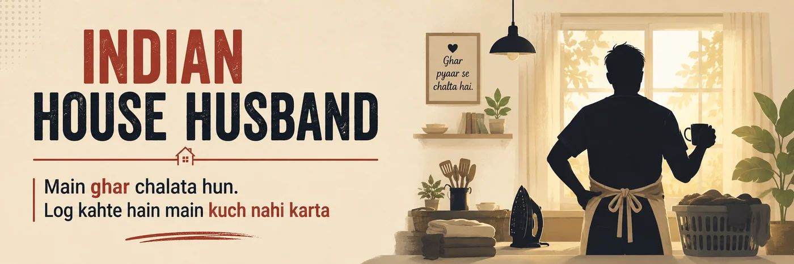

About
For eighteen years, I worked in software. Then, a little over four years ago, I left my job to run our home and raise our daughter — a decision that still needs explaining more often than I'd like.
Indian House Husband started as an anonymous Facebook page: a place to put into words what daily domestic life actually looks like from where I sit. The identity questions. The money questions. The things people say without quite saying them. It has since found its way onto Medium and Substack too.
I write under this name because some of what I want to say is easier to say without my own name attached to it. The home, the family, and the small victories and doubts in between — those are real. The name isn't, yet.
Start with the latest essays, download the free IHH Quarterly Journal, or get in touch.